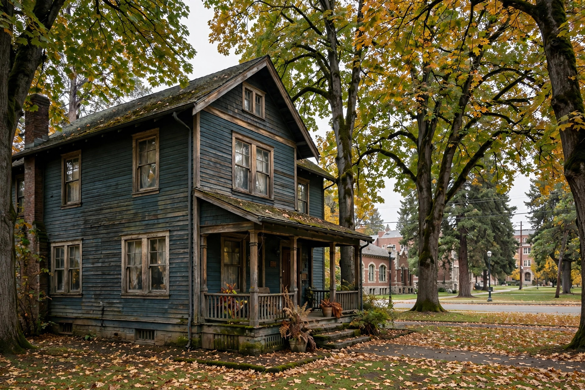
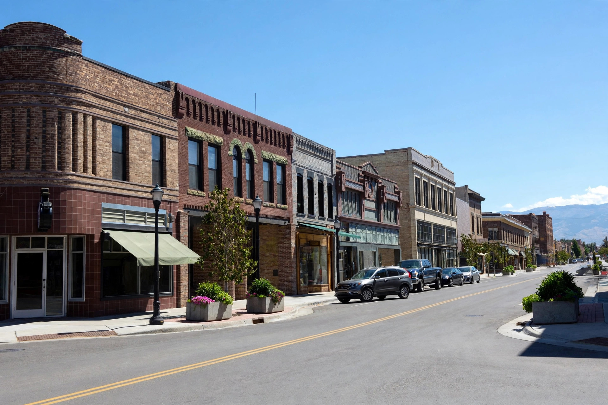

Home / Caldwell
Caldwell, Idaho · Canyon CountyMold or water damage in Caldwell? Get help from a local crew.
Caldwell pairs the valley's oldest houses with its newest subdivisions, each with its own moisture habits: old homes near downtown hide slow leaks inside aging walls, while new builds by Purple Sage deal with irrigation-season groundwater. One call connects you with people who know Canyon County houses.

Caldwell homeowner questions
Are Caldwell's older homes more likely to have hidden mold?
Caldwell's early-1900s to mid-century homes carry extra risk: galvanized lines that develop pinhole leaks and cast-iron drains that corrode inside. Slow wall leaks can run months unsmelled — get a moisture-meter check when buying an older place.
I live near Indian Creek. Should I worry about my crawlspace?
Lots near the creek sit lower than the rest of town, and spring runoff pushes water against foundations. An earthy crawlspace smell after rain deserves a moisture-meter check.
Does my swamp cooler cause mold?
An evaporative cooler raises indoor humidity by design — fine with ventilation, but with windows shut, moisture settles on cool surfaces like closet walls. Cracking opposite windows while it runs keeps air moving.
How quickly does standing water need to come out?
As soon as it's safe. Water wicks into drywall and framing within hours, and mold can start on damp materials within a day or two in warm weather. Fast extraction plus meter-verified drying stops a water event becoming a mold project.
Which neighborhoods around Caldwell do you cover?
Historic downtown, the Indian Creek corridor, Purple Sage, nearby Canyon County neighborhoods, plus Nampa and Middleton. Call (321) 985-3339 and describe what you're seeing.
What happens after you dial
Describe what you're seeing
A short talk about the smell, stain or water — where it is and how long it's been.
Get pointed the right way
You'll hear honestly whether it sounds like an inspection, a remediation or an extraction job.
Someone comes to look
Eyes and meters on the problem before any work is agreed or priced.
What we handle in Caldwell
Eight pages, each built around one problem. Pick the one matching what you're seeing.
Mold Inspection
A walk-through with moisture meters to find where growth is starting and why.
Learn more → MoldMold Remediation
Contained removal and drying for active growth, so it leaves for good.
Learn more → MoldBasement Mold Removal
Below-grade walls stay damp longest — here's how that growth gets cleared.
Learn more → MoldCloset Mold Removal
Still air behind packed clothes on cold walls is a classic setup for closet mold.
Learn more → WaterEmergency Water Extraction
Standing water pulled out fast, before it soaks into floors and walls.
Learn more → WaterFlooded Basement Cleanup
Pump-out, drying and salvage when a basement takes on water.
Learn more → WaterCeiling Water Damage Repair
Stains and sagging spots traced back to the leak above them.
Learn more → WaterWater Damaged Drywall Repair
Wet drywall cut out, the cavity dried, and the wall rebuilt clean.
Learn more →A bungalow off downtown with a quiet leak
Picture a 1940s bungalow near historic downtown. The owner notices a faint musty hallway smell but sees nothing. A moisture walk-through finds high readings along a bathroom wall — a slow drip from an original galvanized line has wetted the cavity for weeks. The fix: open the wall, dry the framing, replace the pipe run, treat the area. Small, slow leaks are what older Caldwell plumbing produces.
Why Caldwell houses get damp
Four patterns show up again and again here.
Indian Creek's low ground
The creek threads through town and the nearest lots sit lower than surrounding blocks. After heavy rain or fast runoff, that low ground pushes water against foundations — slow, repeated wetting that feeds mold on framing.
Downtown's aging houses
The historic core holds homes going back to the early 1900s, many still carrying original galvanized lines and cast-iron drains. Old pipes rarely burst — they weep, and a pinhole drip inside a wall can run months before anyone smells it.
Irrigation-season groundwater
Caldwell sits in farm country, ringed by canals and laterals running full spring through fall. That lifts the shallow water table — why some basements feel dampest in July, not January.
Swamp coolers
Evaporative coolers are still common in Caldwell's older homes, pushing humid air through all summer. Without cross-ventilation, moisture settles on cool walls, in closets, behind furniture — favorite spots for surface mold.
Health context for mold exposure: EPA — Mold, Moisture & Your Home CDC — Mold
Talk through your Caldwell situation
Smell something near the creek, or found a stain in a downtown rental? Describe it on one call and get a straight answer. No charge for the conversation.
